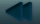
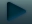
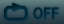
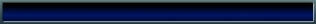
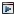

My Animations
I love animation and I strive to make some of my own, but so far that's gone about as well as the rapture; I haven't done anything yet. Hopefully over the next few months I can build this page full of shorts and animations. It beats doing it on YouTube and getting obsessed over numbers that (won't) go up.
So please enjoy my quaint little animations!
So please enjoy my quaint little animations!




Unique Animations
These are animations with unique characters that don't use audio that isn't mine and aren't part of an ongoing series. So pretty much, the opposite of the below sections.
Animations with Repeat Characters
These are short animations with characters which I guess are part of the sr64dd 'branding,' specifically Supreno, Jami, and Martar, but also others.

Materials Preset PromoAnimations based on other Audio
These are short animations that use audio clips that I think are funny or cool :D
Ongoing Series
I'm very ambitious. I plan on creating ongoing animations with recurring characters and actual stories. However, I'm also very unskilled, so this section will remain empty for a good while.
A Little about the Television
You may be wondering what the 'tele' loop option is on the media player. What it's meant to do is play a random video after the previous one finishes. You know, automated entertainment! Well, it only really works when there's a bunch of different videos, so until then it's kinda useless.